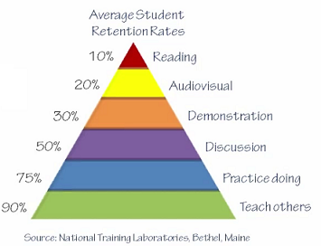
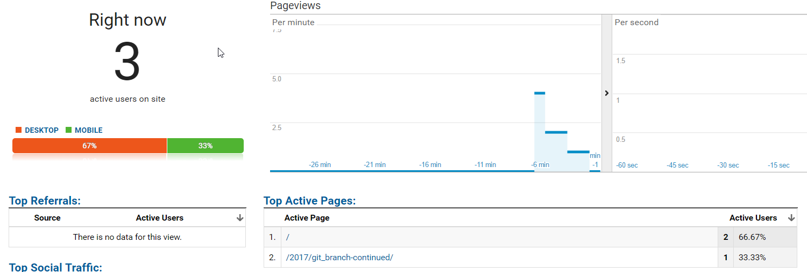

Setup Blog: Using Sphinx and Ablog¶
Writing blogs is a good way to learn. The brain of human being has retention rate of what is learned. In order to learn efficiently, people need to be more active on discussing, practicing and teaching. No matter your blog has already got millions of followers or not, the blog writing itself is very beneficial for yourself to learn better. This blog post will teach you how to setup your personal blog by using open source technology like Sphinx and Ablog.
Contents
Why DIY?¶
Nowadays, there are many free blog sites you can choose like Wordpress, Blogger, Ghost. Users can get a lot of nice features out of box, and write good look and feel blogs. Then why bother doing it yourself?
The followings are the main reasons for the DIY approach:
- You have the full control of the blog source files which reduces the risks if sites are closed or change the pricing model
- Easier to maintain the blog content
- You have more flexibility to customize your blog site
- DIY itself has a lot of fun!
I am not saying DIY is a better way. There are pros/cons of both choices, it is mainly your personal preference.
Sphinx, Ablog and Github Pages¶
To setup blog sites yourselves has many ways, on theory you can write all the pages from scratch. It will make the life easier if you consider using existing tools. In this post, several open source tools like Sphinx, Ablog will be used. And we will use Github Pages to hold the blog sites.
Sphinx¶
Sphinx is from Python community and makes it easy to create beautiful documentation. http://www.sphinx-doc.org/
Sphinx uses reStructuredText as its markup language, which has good readability and easy to maintain.
Ablog¶
Ablog is a Sphinx extension which helps to setup blog site efficiently. http://ablog.readthedocs.io/
Github Pages¶
Github Pages is a product of Github ecosystem, which is a website for you and your projects. The advantage of Github Pages is that it is hosted directly from Github repository. It makes all our blog source files under source control! https://pages.github.com/
Let’s start building our blog site~~~
Installation¶
Python¶
Python installation if the first step, go to: https://www.python.org/
Install latest Python 3.x, which contains the handy utilities like pip.
You can verify the installation by starting a console app and type python. If everything goes right, you will get output like following:
Python 3.6.1 (v3.6.1:69c0db5, Mar 21 2017, 17:54:52) [MSC v.1900 32 bit (Intel)] on win32
Type "help", "copyright", "credits" or "license" for more information.
>>>
You can see the version 3.6.1 on my computer. Ctrl + Z to exit the python.
Sphinx and Ablog¶
Ablog installation will cover the Sphinx. Go to your console app again and type:
pip install -U ablog
It will install all the relevant tools like Sphinx, Alabaster, Werkzeug etc.
You can verify the installation simply by typing ablog in the console app. If everything goes well, you will see the output from ablog.
Github Pages¶
You need a github account. You have it, right? :)
Create a new repository which has the name: [username].github.io. This repository will be the place to host your blog sites.
I recommend you to create a separate repository in github to host your blog source files - Sphinx files in this case.
For this blog sites, you can find the blog site repository: https://github.com/wubw/wubw.github.io
And the blog source files repository: https://github.com/wubw/BinweiBlog
Post and Deploy¶
Assuming that you have created two github repositories as mentioned above:
- One for blog site
- One for blog source file
Open console app, and switch to blog source file repository. Run ablog start command to setup the current directory as ablog repository.
Several examples blog source files are created, which have Sphinx file extension: .rst
Run ablog build to build the repository. The build process is to generate html/javascript/css files from your source files (.rst).
Run ablog serve to view the blog site locally. If everything goes well, you are supposed to see the blog pop-up in your web browser.
Run ablog post + filename.rst to add a new blog post.
conf.py in the root of repository is the configuration file, you can change the theme and customize your blog site in it.
Run ablog deploy to deploy the blog to the destination github repository. You need to add github_pages configuration into conf.py. I encounter some deployment challenges in my Windows operating system, will explain how I resolve it in Notes section.
This blog site is using exactly the same tools, so you can expect to see the similar result for your own blog site.
Notes¶
You may encounter some mysterious errors since ablog is still under construction. In this section, I just share some important notes from my point of view.
ablog build error¶
When I run ablog build first on my computer, I encounter the following error:
Traceback (most recent call last):
File "C:\Users\wubw\AppData\Local\Programs\Python\Python36-32\Scripts\ablog-script.py", line 11, in <module>
load_entry_point('ablog==0.8.4', 'console_scripts', 'ablog')()
File "c:\users\wubw\appdata\local\programs\python\python36-32\lib\site-packages\ablog\commands.py", line 404, in ablog_main
namespace.func(**namespace.__dict__)
File "c:\users\wubw\appdata\local\programs\python\python36-32\lib\site-packages\ablog\commands.py", line 119, in ablog_build
confdir = find_confdir()
File "c:\users\wubw\appdata\local\programs\python\python36-32\lib\site-packages\ablog\commands.py", line 22, in find_confdir
if isfile(conf) and 'ablog' in open(conf).read():
File "c:\users\wubw\appdata\local\programs\python\python36-32\lib\encodings\cp1252.py", line 23, in decode
return codecs.charmap_decode(input,self.errors,decoding_table)[0]
UnicodeDecodeError: 'charmap' codec can't decode byte 0x9d in position 583: character maps to <undefined>
It is an encoding issue in the ablog library, open the commands.py mentioned in the error message and go to the error line. The fix is to add encoding parameter:
if isfile(conf) and 'ablog' in open(conf, encoding="utf8").read():
return confdir
In Linux/Mac and some Windows OS, the build process may complain about fail to create a _website/blog. Manually create it should bypass the issue.
ablog deploy error¶
When I run ablog deploy on Windows 10, it fails due to some mysterious errors. But when I run the same command on Mac and Ubuntu, I manage to deploy the blog to the target repository.
Currently, I cannot figure out what is the root course of the error. Then the workaround is to deploy from Mac or Ubuntu, or setup some virtual machines?
Chinese blog issue¶
When my blog contains Chinese characters, I encounter mysterious errors in atom feed generation. After some investigation, the error disappears if excerpt does not contain Chinese characters.
Enhance the blog¶
You can enhance/customize your blog, e.g. support discussion by using Disqus, monitoring usage by using Google Analytics. See:
Useful links¶
The following links are quite useful to use Sphinx and customize it:
Cheat sheet of Sphinx:
https://thomas-cokelaer.info/tutorials/sphinx/rest_syntax.html
Configure the alabaster theme:
http://alabaster.readthedocs.io/en/latest/customization.html#theme-options
How to do cross-reference:
http://ablog.readthedocs.io/manual/cross-referencing-blog-pages/
Post Excerpts and Images:
http://ablog.readthedocs.io/manual/post-excerpts-and-images/
Written by Binwei@Oslo